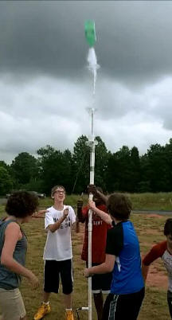

The water rocket is a very rich experiment that shows the effect of air resistance on projectile motion.
The Water Rocket Experiment developed by Barbara and Wolfgang Christian using the Tracker Video Modeling Tool version 4.5. Tracker was developed by Doug Brown and is part of the Open Source Physics Project.